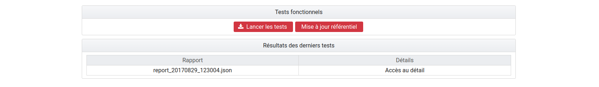
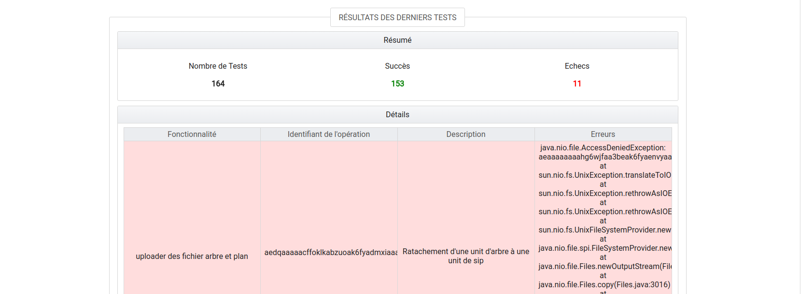
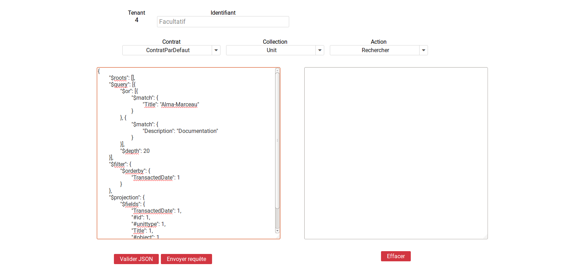
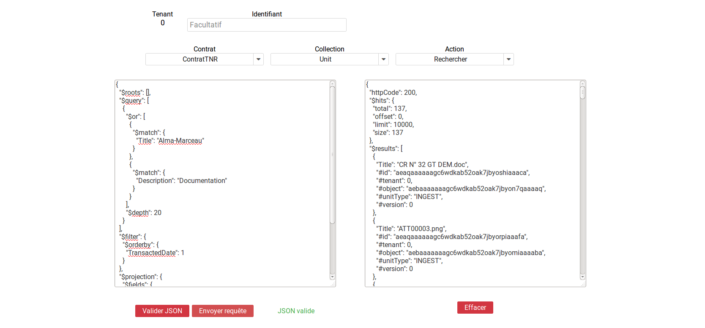
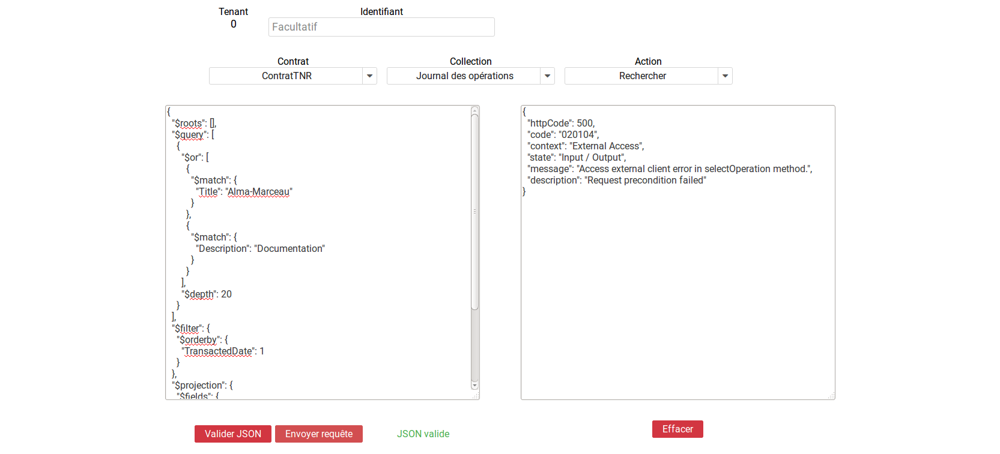
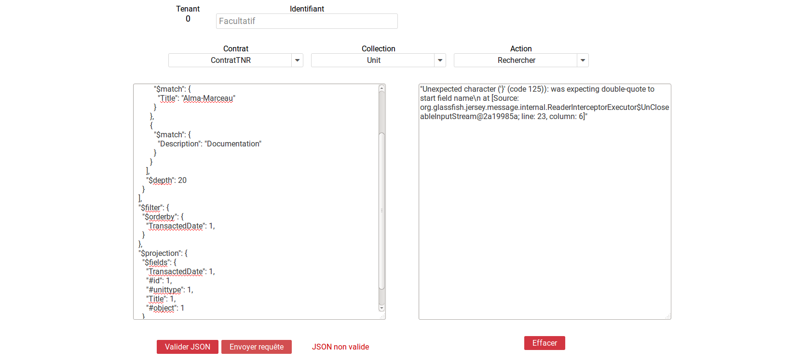

3. Tests¶
3.1. Tests de performance¶
3.1.1. Introduction¶
Les tests de performance consistent à réaliser plusieurs fois l’entrée d’un SIP et à mesurer son temps d’exécution. Ces entrées peuvent être réalisées par une ou plusieurs tâches parallèles.
L’interface est accessible par le menu : Tests > Test de performance.
Les tests ne sont pas segmentés par tenant. Ces derniers sont directement configurés dans les tests. Il n’est donc pas nécéssaire de sélectionner un tenant pour accéder au contenu de cette section.
3.1.2. Champs disponibles¶
L’IHM est constituée de trois champs :
- Liste des SIP : liste des SIP disponibles pour réaliser le test. Ces SIP sont ceux déposés dans le dépôt vitam-itest. Il n’est possible de sélectionner qu’un SIP à la fois.
- Nombre de Thread : permet de définir le nombre de tâches parallèles qui exécuteront les entrées.
- Nombre d’Ingest : permet de définir le nombre total d’entrées à réaliser.
Un bouton « lancer les tests » permet d’exécuter le test de performance.
3.1.3. Résultats¶
Les résultats sont disponibles dans la section en bas de la page.
Chaque ligne représente un test de performance. Le nom du test est formaté de la façon suivante : report_AAAAMMJJ_HHmmSS.csv. Le bouton de téléchargement permet de récupérer le fichier .csv contenant les données du test.
Chaque ligne du fichier .csv représente une entrée. Les colonnes sont :
- OperationID
- PROCESS_SIP_UNITARY
- STP_SANITY_CHECK_SIP
- SANITY_CHECK_SIP
- CHECK_CONTAINER
- STP_UPLOAD_SIP
- STP_INGEST_CONTROL_SIP
- PREPARE_STORAGE_INFO
- CHECK_SEDA
- CHECK_HEADER
- CHECK_HEADER.CHECK_AGENT
- CHECK_HEADER.CHECK_CONTRACT_INGEST
- CHECK_DATAOBJECTPACKAGE
- CHECK_DATAOBJECTPACKAGE.CHECK_MANIFEST_DATAOBJECT_VERSION
- CHECK_DATAOBJECTPACKAGE.CHECK_MANIFEST_OBJECTNUMBER
- CHECK_DATAOBJECTPACKAGE.CHECK_MANIFEST
- CHECK_DATAOBJECTPACKAGE.CHECK_CONSISTENCY
- STP_OG_CHECK_AND_TRANSFORME
- CHECK_DIGEST
- OG_OBJECTS_FORMAT_CHECK
- STP_UNIT_CHECK_AND_PROCESS
- CHECK_UNIT_SCHEMA
- CHECK_ARCHIVE_UNIT_PROFILE
- CHECK_CLASSIFICATION_LEVEL
- UNITS_RULES_COMPUTE
- STP_STORAGE_AVAILABILITY_CHECK STORAGE_AVAILABILITY_CHECK
- STORAGE_AVAILABILITY_CHECK
- STORAGE_AVAILABILITY_CHECK.STORAGE_AVAILABILITY_CHECK
- STP_OBJ_STORING
- OBJ_STORAGE
- OG_METADATA_INDEXATION
- STP_UNIT_METADATA
- UNIT_METADATA_INDEXATION
- STP_OG_STORING
- COMMIT_LIFE_CYCLE_OBJECT_GROUP
- OG_METADATA_STORAGE
- STP_UNIT_STORING
- COMMIT_LIFE_CYCLE_UNIT
- UNIT_METADATA_STORAGE
- STP_UPDATE_OBJECT_GROUP
- OBJECT_LIST_EMPTY
- STP_ACCESSION_REGISTRATION
- ACCESSION_REGISTRATION
- STP_INGEST_FINALISATION
- ATR_NOTIFICATION
- ROLL_BACK
La colonne « Opération ID » contient le GUID de l’opération d’entrée. Les autres colonnes indiquent le temps en millisecondes qui a été nécessaire pour passer l’étape.
3.2. Tests fonctionnels¶
3.2.1. Introduction¶
La partie « Tests Fonctionnels » contient les écrans de lancement et de consultation des résultats des TNR.
NB : La configuration des TNR ne s’effectue pas depuis ces écrans. La procédure de configuration est décrite dans la documentation « Configuration des tests de non régression ».
Elle est accessible depuis l’IHM de recette, par le menu Tests > Test Fonctionnels
Les tests ne sont pas segmentés par tenant. Ces derniers sont directement configurés dans les tests. Il n’est donc pas nécessaire de sélectionner un tenant pour accéder au contenu de cette section.
3.2.2. Page Tests Fonctionnels¶
La page est divisée en deux parties :

- Boutons de gestion
- Résultats des derniers tests
Boutons de gestion
Bouton « Lancer les tests » : permet de rejouer les tests configurés. Ceci donnera lieu à la création d’un nouveau rapport. Bouton « Mise à jour référentiel » : permet de récupérer les derniers fichiers de configuration des tests depuis « Git » (gestionnaire de sources). Ainsi, si un utilisateur a ajouté des tests et que ceux-ci ont été intégrés à Git, le fait de cliquer sur ce bouton permet de les prendre en compte au prochain clic sur le bouton « Lancer les Tests ».
Résultat des derniers tests
Les résultats de tests sont affichés dans un tableau à deux colonnes :
Rapport Détail
Chaque ligne représente le rapport issu d’une campagne de tests. La colonne « Rapport » indique le nom du rapport. Celui-ci est constitué de la façon suivante : report_AAAAMMJJ_HHmmss.json. Ainsi le rapport correspondant à la dernière campagne de tests se trouve au-dessus de la liste.
La colonne détail affiche simplement la mention « Accès au détail ».
Au clic sur une ligne, la page du détail du rapport concerné s’affiche sur l’écran.
3.2.3. Détail des tests¶
L’écran de détail d’une campagne de tests est divisé en deux parties :

- Partie Résumé
- Partie Détails
Partie Résumé
La partie Résumé comporte les trois indications suivantes :
- Nombre de Tests : nombre de tests inclus dans la campagne
- Succès : nombre de tests en succès
- Échecs : nombre de tests en échec
Partie Détails
Chaque ligne du tableau représente le résultat d’un test. La ligne est sur fond vert lorsque le test est en succès, sur fond rouge lorsqu’il est en échec.
Ci-après l’exemple d’une ligne correspondant à un test en succès. Par défaut, les tests en échec s’affichent en premier.

Le tableau est constitué de quatre colonnes :
- Fonctionnalité : correspond à la fonctionnalité testée. Par défaut, un fichier de configuration correspond à une fonctionnalité. On a par exemple un fichier de configuration pour réaliser tous les tests sur l’INGEST. Dans ce cas, le nom de la fonctionnalité sera indiqué dans tous les cas de test correspondant dans le tableau de restitution.
- Identifiant : identifiant de l’opération correspondant au test. Il peut être utilisé pour trouver plus de détails sur le test dans le journal des opérations.
- Description : il s’agit d’une description du cas de test effectué. Elle est indiquée dans le fichier de configuration pour chacun des tests.
- Erreurs : erreur technique liée à l’échec du test. Cette colonne est vide pour les tests en succès.
3.3. Testeur de requêtes DSL¶
3.3.1. Introduction¶
Le testeur de requêtes DSL met à disposition des administrateurs une interface graphique permettant de simplifier l’exécution de requêtes sur les API de la solution logicielle Vitam.
Celle-ci contient un formulaire composé de plusieurs champs.
L’interface est accessible par le menu : Tests > Test requêtes DSL
3.3.2. Champs disponibles¶
Tenant : champ obligatoire. Indique le tenant sur lequel la requête va être exécutée. Ce champ est renseigné automatiquement avec le numéro du tenant sélectionné par l’administrateur.
Contrat : champ obligatoire. Liste permettant de sélectionner un contrat d’accès qui sera associé à la requête.
Collection : champ obligatoire. Liste permettant de sélectionner la collection sur laquelle la requête va être exécutée.
Action : champ obligatoire. Liste permettant de sélectionner le type d’action à effectuer. Il est possible de sélectionner l’action « Rechercher » pour l’ensemble des collections.
Pour les collections suivantes, il est également possible de choisir l’action « Mettre à jour » :
- Unit
- Profil
- Contrat d’accès
- Contrat d’entrée
- Contexte
Opération: Pour la collection Opération, il est également possible de choisir les actions suivantes:
- Action Suivante
- Action Pause
- Action Reprendre
- Action Stop
Identifiant : champs optionnel. Permet de renseigner le GUID de l’objet ciblé dans la collection.
Requête DSL : champ obligatoire. Permet de saisir la requête DSL au format Json.
3.3.3. Réaliser une requête¶
Pour réaliser une requête, l’administrateur remplit les champs du formulaire afin que leur contenu soit cohérent avec la requête qu’il souhaite exécuter.
Pour vérifier la validité du formatage du Json, l’administrateur clique sur bouton « Valider Json ». Si le Json est valide, le texte est mis en forme et la mention « Json Valide » est affichée à gauche du bouton. Dans le cas contraire, la mention « Json non valide » est indiquée.

Pour exécuter la requête, l’administrateur clique sur le bouton « Envoyer requête ». Une zone de résultat est alors affichée à droite de l’écran et contient le retour envoyé par la solution logicielle Vitam.
Si la requête contient une erreur autre que le non-respect du formatage de la requête Json, le retour envoyé par la solution logicielle Vitam contiendra un code d’erreur et sera affiché de la façon suivante :
Si la requête envoyée par l’administrateur ne respecte pas le formatage de la requête Json, l’endroit où se trouve l’erreur sera indiqué dans le retour de la façon suivante :
L’utilisateur peut vider le contenu de l’espace dédié à la réponse du DSL en cliquant sur le bouton « Effacer ».
3.4. Visualisation du graphe¶
- L’interface est accessible par le Menu: Tests > Visualisation du graphe.
Cette partie permet d’avoir une répresentation visuelle d’un graphe contenu dans un SIP. La première étape consiste donc à récupérer les information suivantes :
- L’identifiant de l’opération
- L’intitulé du contrat utilisé
Note : la page correspondant à l’écran utilisé est expérimentale.
Il faut ensuite rajouter les informations dans les champs prévus à cet effet : « Contrat » et « Identifiant d’opération »
Puis il suffit de cliquer sur le bouton » Envoyer la requête » pour visualiser plusieurs choses :
- Sur la partie gauche, la représentation visuelle du graphe contenu dans le SIP
- sur la partie droite, lorsqu’on clique sur la représentation de chaque unité archivistique, le détail des données reliées à l’unité archivistique s’affiche